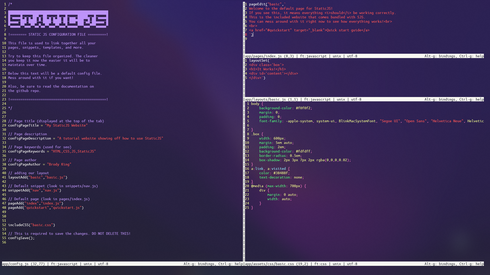

Brody King
Brody King
A web framework made for static websites.
/projects/staticjs/
Last modified on May 30, 2022
I had a problem, I wanted to create a simple website that would only have a few pages and that would also reuse some components. Simple enough right? Wrong. My project quickly grew unorganized and a pain to manage.
Thats why I created this! It lets you create websites that have reusable page templates and code snippets. It runs very fast and dosent even require a server to work!
To continue reading the docs, please check the github repo